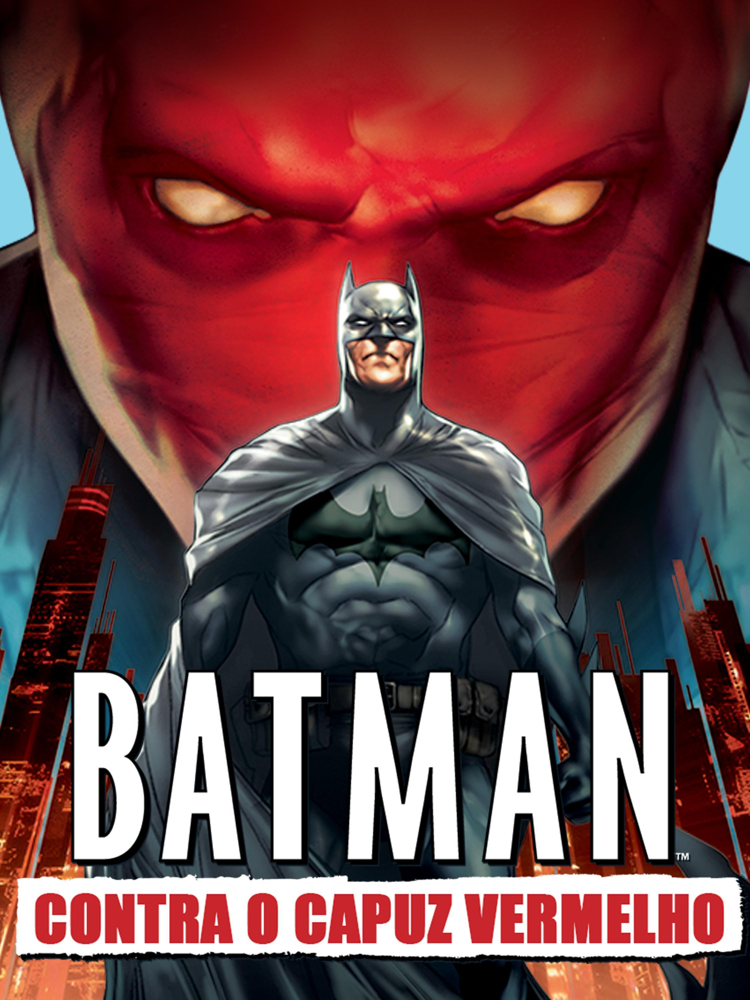

Batman Contra o Capuz Vermelho
Batman Contra o Capuz Vermelho é uma animação intensa que explora os dilemas morais do herói. A história gira em torno do retorno de Jason Todd, o ex-Robin, agora um violento vigilante chamado Capuz Vermelho. O filme aborda temas como vingança, perda e os limites da justiça. Com ótima animação e roteiro sólido, a obra emociona e instiga reflexões. É uma das melhores adaptações do universo Batman.